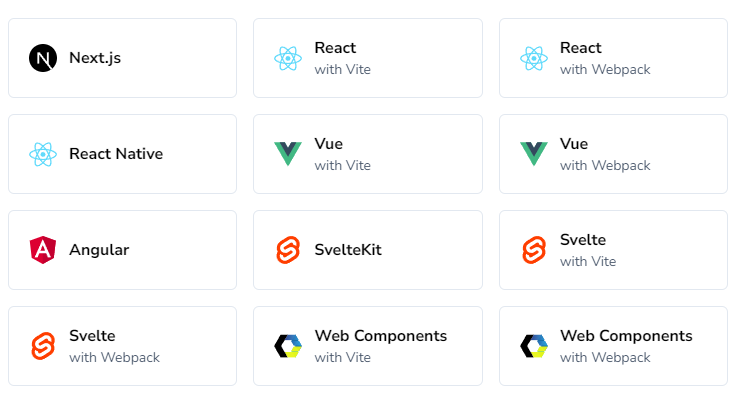
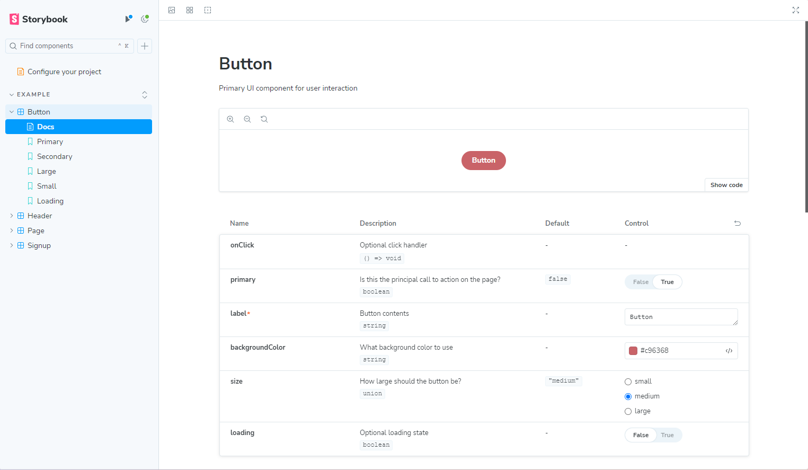
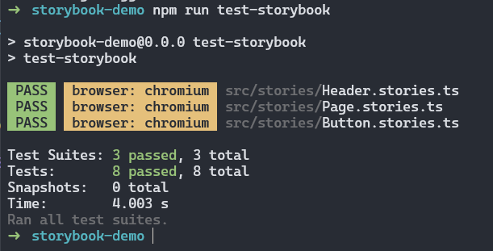
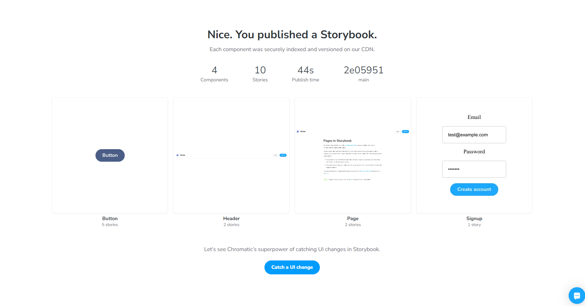
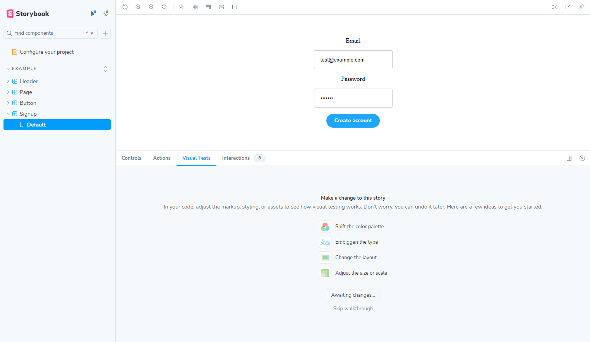
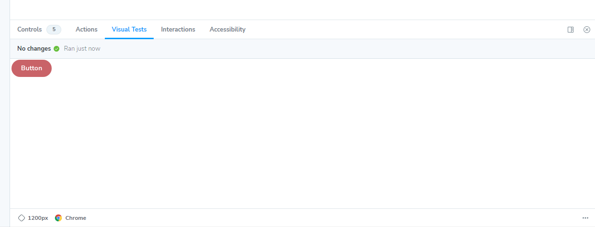
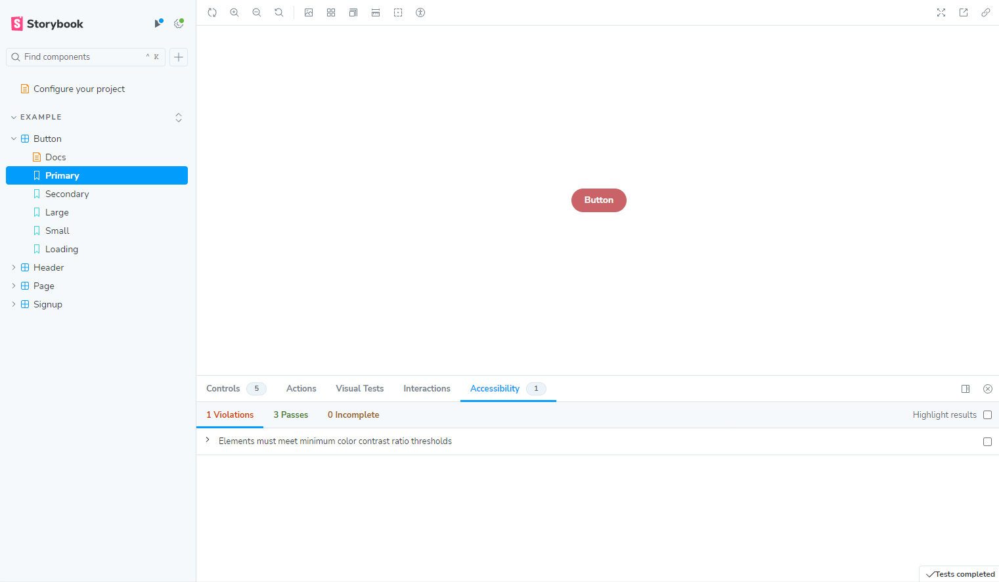

Storybook is a frontend workshop for building UI components and pages in isolation. It helps you develop and share hard-to-reach states and edge cases without needing to run your whole app. Thousands of teams use it for UI development, testing, and documentation. It’s open source and free.

Captures rendered state of a UI component. Components can be a collection of stories where each story is a different state of that component.
Storybook is able to analyze your components and automatically generate documentation for them.
When we make components we make stories, but we also need to test them. You can write tests for your stories and they will be run in Storybook with pretty low-effort.
We’re able to publish our stories to expose your work with others either internally or publicly. Additionally, you can showcase your stories in apps like Notion and even Figma!
Overtime web has become more complex and component-driven tools have become a great way to break down really complex interfaces into smaller, more manageable pieces. These UI components can be difficult to test due to being tangled up with the rest of the application logic.
By leveraging Storybook we can build in isolation which is a benefit for both developers, designers, and testers. Developer especially benefits from this as it allows them to focus on the component and not the rest of the application and actually is a good way to right components that are easy to test and not tied to any external dependencies.

*.stories.js or *.story.ts file.import type { Meta, StoryObj } from "@storybook/react";
import { ButtonGroup } from "../ButtonGroup";
//👇 Imports the Button stories
import * as ButtonStories from "./Button.stories";
const meta: Meta<typeof ButtonGroup> = {
component: ButtonGroup,
};
export default meta;
type Story = StoryObj<typeof ButtonGroup>;
export const Pair: Story = {
args: {
buttons: [
{ ...ButtonStories.Primary.args },
{ ...ButtonStories.Secondary.args },
],
orientation: "horizontal",
},
};import type { Meta, StoryObj } from "@storybook/react";
import { Button } from "./Button";
const meta: Meta<typeof Button> = {
component: Button,
// 👇 Meta-level parameters
parameters: {
backgrounds: {
default: "dark",
},
},
};
export default meta;
type Story = StoryObj<typeof Button>;
export const Basic: Story = {};import type { Meta, StoryObj } from "@storybook/react";
import { Button } from "./Button";
const meta: Meta<typeof Button> = {
component: Button,
decorators: [
(Story) => (
<div style={{ margin: "3em" }}>
{/* 👇 Decorators in Storybook also accept a function. Replace <Story/> with Story() to enable it */}
<Story />
</div>
),
],
};
export default meta;Let’s install the test runner that is running on Jest.
npm install @storybook/test-runner --save-devWith our Storybook instance running, we can run out tests with the following command:
npm run test-storybook
npm install @storybook/test @storybook/addon-interactions --save-devHigh level the interaction addon gives us helpers to control the execution flow of our play function. For example, we can pause, resume, rewind, and step through interactions in our stories!
import type { StorybookConfig } from "@storybook/react-vite";
const config: StorybookConfig = {
stories: ["../src/**/*.mdx", "../src/**/*.stories.@(js|jsx|mjs|ts|tsx)"],
addons: [
"@storybook/addon-onboarding",
"@storybook/addon-links",
"@storybook/addon-essentials",
"@chromatic-com/storybook",
"@storybook/addon-interactions",
],
framework: {
name: "@storybook/react-vite",
options: {},
},
};
export default config;export const LoggedOut: Story = {
play: async ({ canvasElement }) => {
const canvas = within(canvasElement);
const loginButton = await canvas.getByRole("button", { name: /Log in/i });
await userEvent.click(loginButton);
},
};We can write assertions on the results
export const Loading: Story = {
args: {
label: "Button",
loading: false,
},
decorators: [
(Story) => {
const [_args, updateArgs] = useArgs();
const handleSubmit = (e: FormEvent<HTMLFormElement>) => {
e.preventDefault();
updateArgs({ loading: true });
// Simulate a request to the server
setTimeout(() => {
updateArgs({ loading: false });
}, 1000);
};
return (
<form onSubmit={handleSubmit}>
<Story />
</form>
);
},
],
play: async ({ canvasElement }) => {
const canvas = within(canvasElement);
const button = await canvas.getByRole("button", { name: /Button/i });
await userEvent.click(button);
},
};Notice the use of decorators on the story level to wrap it within a form. Also notice the useArgs API, this allows us to change the args of the story and update the state of the component.
With this done, let’s create a new sign up form component and add a story for it. I’ll be skipping the actual component code and just focusing on the story.
import type { Meta, StoryObj } from "@storybook/react";
import { Signup } from "./Signup";
const meta = {
title: "Example/Signup",
component: Signup,
parameters: {
layout: "fullscreen",
},
} satisfies Meta<typeof Signup>;
export default meta;
type Story = StoryObj<typeof meta>;
export const Default: Story = {};Now we can write our play function and do our assertions
export const Default: Story = {
play: async ({ canvasElement }) => {
const canvas = within(canvasElement);
const email = canvas.getByLabelText(/Email/i);
expect(email).toBeInTheDocument();
await userEvent.type(email, "test@example.com", {
delay: 100,
});
const password = canvas.getByLabelText(/Password/i);
expect(password).toBeInTheDocument();
await userEvent.type(password, "test123", {
delay: 100,
});
const submit = canvas.getByRole("button", {
name: /Create account/i,
});
await userEvent.click(submit);
const loader = await canvas.getByRole("img", { name: /loader/i });
expect(loader).toBeInTheDocument();
await waitFor(() => expect(loader).not.toBeInTheDocument());
},
};This is just the surface of what the play functions can do. We are able to showcase interactions and also assert behaviour of our components right in Storybook!
Signing up to Chromatic is easy throught GitHub. Just authorize and then select the repository you want to use for your Storybook.
Let’s install Chromatic
npm install --save-dev chromaticAnd now we can manually publish our Storybook to Chromatic
npx chromatic --project-token=chpt_TOKEN_HEREThis will authenticate with Chromatic, retrieve git information, collect metadata on Storybook, build our Storybook, and publish that to Chromatic.
We can see our demo components in Chromatic now

Now that we’ve published our Storybook to Chromatic. Let’s wire it up to our Storybook instance locally!
Now when viewing a story we can click “Visual Tests” menu and SSO into Chromatic.

Chromatic has built our initial Storybook from the manual command we ran earlier. It is now awaiting for a change to be to the Storybook.
Chromatic detected the change and did a comparison and we had to approve this. This doesn’t have to be a developer, it could be a designer, product manager, etc!
Now when we run the visual tests again we can see no changes are detected.

From this point, we would establish a CI/CD integration with Chromatic which will handle all the Storybook uploading piece and then tie the actions required to the specific pull request to approve the regressions or deny if they are not intended.
npm install @storybook/addon-a11y --save-devAnd add it to our Storybook config
import type { StorybookConfig } from "@storybook/react-vite";
const config: StorybookConfig = {
stories: ["../src/**/*.mdx", "../src/**/*.stories.@(js|jsx|mjs|ts|tsx)"],
addons: [
"@storybook/addon-onboarding",
"@storybook/addon-links",
"@storybook/addon-essentials",
"@chromatic-com/storybook",
"@storybook/addon-interactions",
"@storybook/addon-a11y",
],
framework: {
name: "@storybook/react-vite",
options: {},
},
};
export default config;And that’s it!
